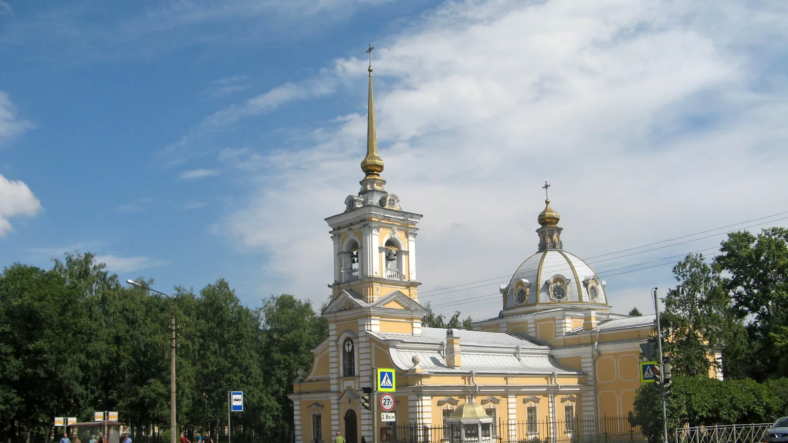

Подростково-молодёжный клуб
Алые паруса
ул. Пионерстроя, д. 4
Смотреть клуб
Молодёжные площадки района
Клубы ПМЦ «Лигово» на Юго-Западе и в Красном Селе. Найди площадку по адресу или интересу.
Смотреть площадкиКаталог района
Ищи по названию, адресу или направлению.
Показано 17 площадок
Загружаем карту клубов…
Предварительные координаты: © OpenStreetMap contributors.
ул. Пионерстроя, д. 4
Смотреть клубул. Тамбасова, д. 3, корп. 1
Смотреть клубул. Маршала Казакова, д. 68, корп. 1
Смотреть клубул. Тамбасова, д. 32
Смотреть клубКрасносельское ш., д. 46, корп. 4
Смотреть клубул. Котина, д. 2, корп. 1
Смотреть клубул. Добровольцев, д. 44
Смотреть клубпр. Героев, д. 24, корп. 2
Смотреть клубул. Пограничника Гарькавого, д. 36, корп. 1
Закрыт на капитальный ремонт
Смотреть клубул. Маршала Захарова, д. 23
Смотреть клубпр. Ветеранов, д. 166
Смотреть клубул. Маршала Захарова, д. 29, корп. 2
Смотреть клубг. Красное Село, ул. Освобождения, д. 31, корп. 1
Смотреть клубул. Десантников, д. 34
Смотреть клубул. Чекистов, д. 28
Смотреть клубБалтийский бульвар, д. 4, стр. 1
Смотреть клубул. Морской Пехоты, д. 22, корп. 2
Смотреть клубПодходящих площадок не найдено. Попробуй другой запрос.
Связаться с учреждением
Контакты учреждения
Балтийский бульвар, д. 4
Перед посещением
Спроси, для кого открыта группа.
Проверь дни, время и наличие мест.
Узнай, как присоединиться.
Адреса и бесплатные направления 16 клубов взяты из городского документа ПМЦ «Лигово», загруженного 01.06.2026. «Альфа» в нём отмечена закрытой на капремонт, поэтому в каталог не включена. Открытие «Компаса» подтверждает администрация района; действующие направления этого клуба уточняются. Адрес учреждения в городском документе отличается от адреса в более старой карточке районной администрации. Перед визитом свяжись с ПМЦ.
Фото Троицкой церкви в Красном Селе: Екатерина Борисова, Wikimedia Commons, CC BY-SA 4.0. Изображение кадрировано и сжато.